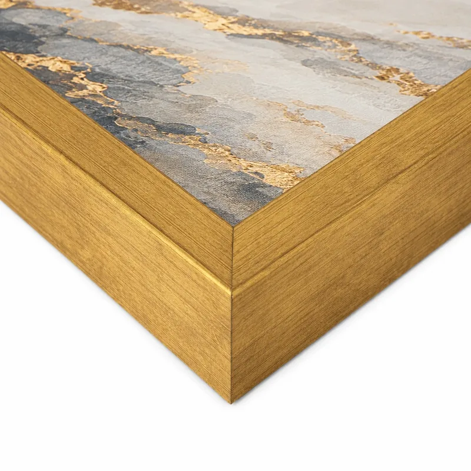

Toplo · klasično · upečatljivo
Zlatni ram
Brušena zlatna završna obrada daje slici toplinu i težinu kakvu ima umjetnina u galeriji. Zlatni ram ne pokušava da se sakrije — on je dio kompozicije i uokviruje motiv kao vrijedan predmet.
Najbolje stoji uz:
- apstrakcije sa zlatnim ili oker detaljima
- klasične motive, portrete i pejzaže u toplim tonovima
- prostore sa drvetom, mesingom i toplom rasvjetom